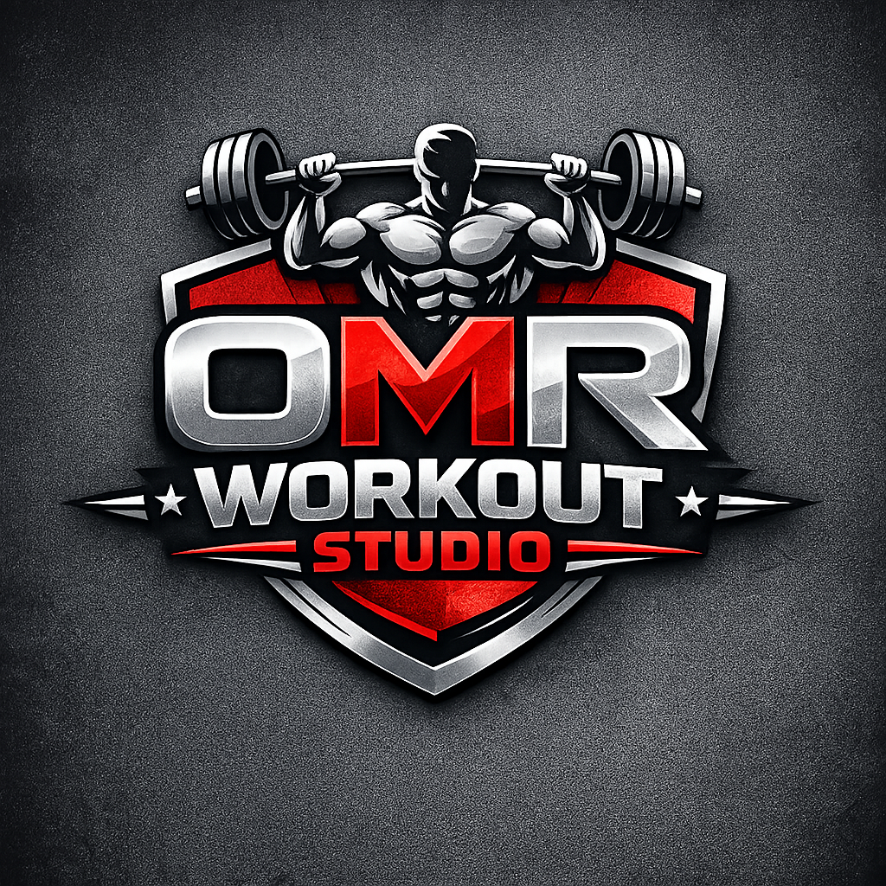
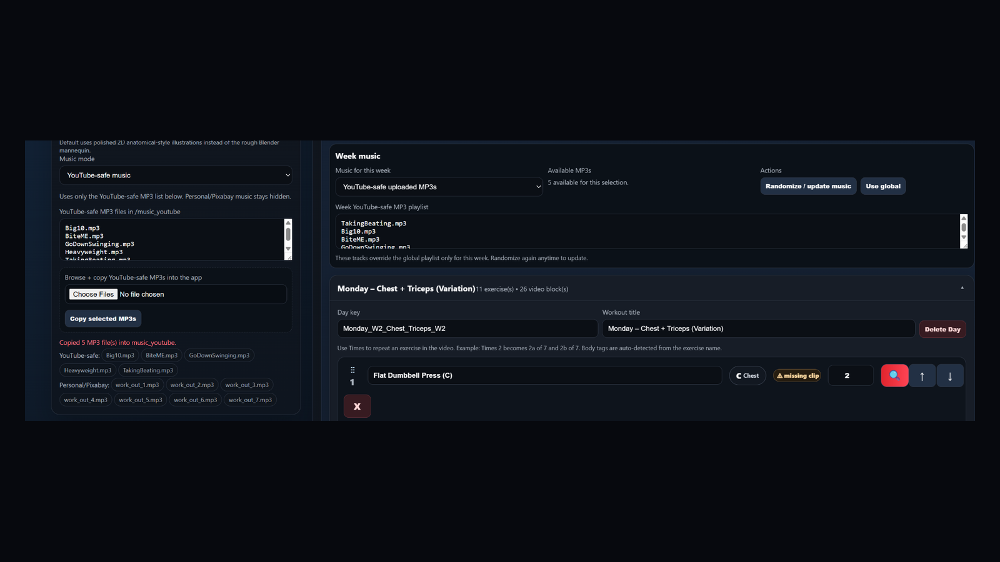
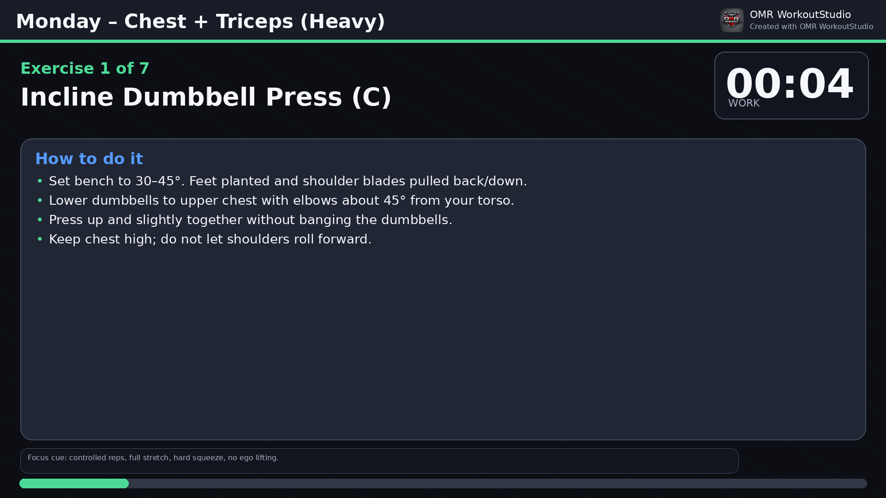

Local app interface
Dark theme aligned with the red/black/white logo style. Weeks and days can collapse so the page stays manageable.

OMR WorkoutStudioWindows desktop app • private local rendering • 1080p by default
OMR WorkoutStudio turns weeks, days, exercises, timers, clean anatomical-style illustrations, instructions, and music into downloadable MP4 workout videos from your own computer.
Download the Windows ZIP, extract it, then double-click OMR WorkoutStudio.exe. The app opens as a local browser-style page.

App preview
The app keeps the webpage interface, but runs locally like a desktop app. Build the plan, choose music, then generate one day, one week, or all weeks.
Dark theme aligned with the red/black/white logo style. Weeks and days can collapse so the page stays manageable.

Uses polished 2D anatomical-style visuals by default instead of the rough experimental Blender mannequin.
Current features
Focuses on cleaner visuals, better playlist behavior, saved custom exercises, smoother editing, and a more polished desktop experience.
Default videos use clean anatomical-style illustrations, target muscle highlights, ghost poses, and movement arrows.
Create Week 1, Week 2, and beyond. Each week can have different workout days, exercises, and music.
Set how many times each exercise appears in the video, such as Incline Press x2 or Hammer Curl x3.
Reorder exercises with drag/drop, auto-title-case exercise names, and keep day sections easier to manage.
Add built-in, API-searched, or custom exercises. New custom/API exercises are saved for future selection.
YouTube-safe and personal MP3 playlists rotate through all selected tracks instead of repeating only the first clip.
Startup stays 30 seconds: first 10 seconds summarize the workout, then 20 seconds preview the first exercise instructions.
Generate a new week by number of workout days, exercises per day, or daily session minutes.
Save and load workout plans so repeat programs do not need to be rebuilt from scratch.
Videos include timer, progress bar, instructions, branding, beeps, music, and clean visuals.
Optional Studio Animation Library remains available for users who want to map real clips or experiment with 3D generation.
Workflow
Select visual style, timer length, rest length, resolution, and music mode.
Browse/copy MP3 files into YouTube-safe or personal music folders, then randomize or set week-specific music.
Create or generate weeks. Add days, exercises, repeats, and saved custom/API exercises.
Instructions are generated automatically where possible. Custom AI instructions can be pasted and saved.
Generate all weeks, one week, or a single day. The page locks while rendering so you know it is working.
Use YouTube-safe music for YouTube uploads, or use personal/Pixabay/no-music modes for private use.
How to install
Click Download for Windows and save the app ZIP to your computer.
Right-click the ZIP and choose Extract All. Do not run it from inside the ZIP preview.
Double-click OMR WorkoutStudio.exe. A local browser page opens automatically.
Your generated MP4 files are saved in the app’s local output folder.
Windows may show a SmartScreen warning because small independent apps may not be code-signed yet. Choose More info → Run anyway only when downloaded from your official release page.
Adding music
Rotates through all selected tracks in order. If a video is longer than the playlist, it repeats the full playlist instead of only repeating the first song.
Use tracks you have properly licensed for YouTube. Add them through the app or copy MP3 files into the folder.
music_youtube/Choose YouTube-safe music in the app.
Use your personal music or tracks where you understand the license terms.
music_pixabay/Choose Personal/Pixabay music in the app.
Use only countdown and timer beeps. This is the simplest mode and needs no MP3 files.
No folder neededChoose No music – beeps only.
Each week can use global music settings or its own playlist. This is useful when Week 1, Week 2, or a single generated day needs a different music set.
Inside the video
Generated examples
See sample workout videos, timer videos, and generated fitness content on the official OMR WorkoutStudio YouTube channel.
Generated workout examples and branded fitness video output from the app.
About the developer
OMR WorkoutStudio was created by Omarr Syed, a senior software engineer building practical tools for fitness, automation, and everyday productivity.
FAQ
No. The downloadable desktop build is packaged so users can run it like a normal Windows app.
Not for normal use. Defaults to clean illustration mode. Blender is only for the advanced/experimental Studio Animation Library workflow.
The desktop release includes FFmpeg inside the app package.
No. It runs locally and saves generated videos in a local output folder unless you choose to upload or share them elsewhere.
Yes. You can generate all weeks, one week, or one specific day, such as Week 2 Monday.
Yes. A week can use the global playlist or its own week-specific playlist. YouTube-safe and personal playlists are kept separate.
Yes. Custom and API-searched exercises added to a workout are saved into the exercise library for future selection.
Yes, but use music carefully. Use tracks you have properly licensed for YouTube, or use beeps-only mode. The app separates YouTube-safe and personal music folders to help avoid accidental use.
Generated MP4 files are saved inside the app folder under output.
Open the OMR WorkoutStudio YouTube channel.